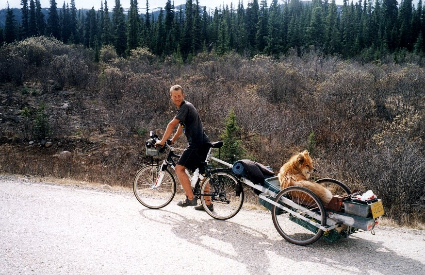
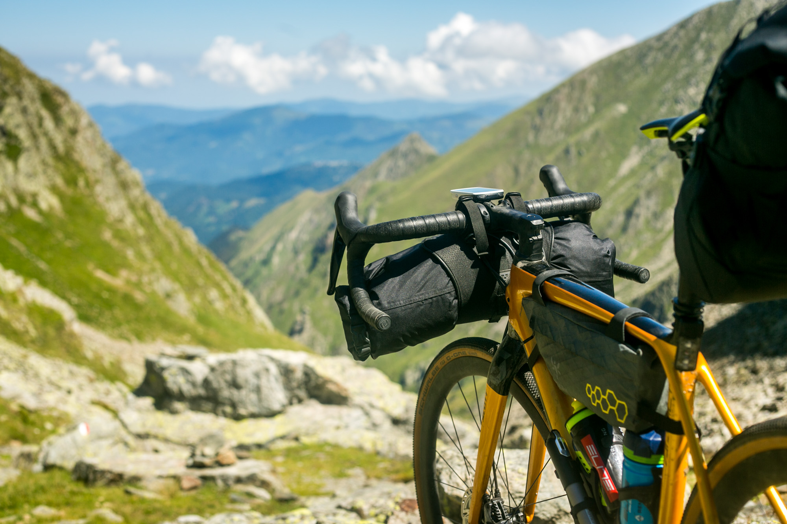
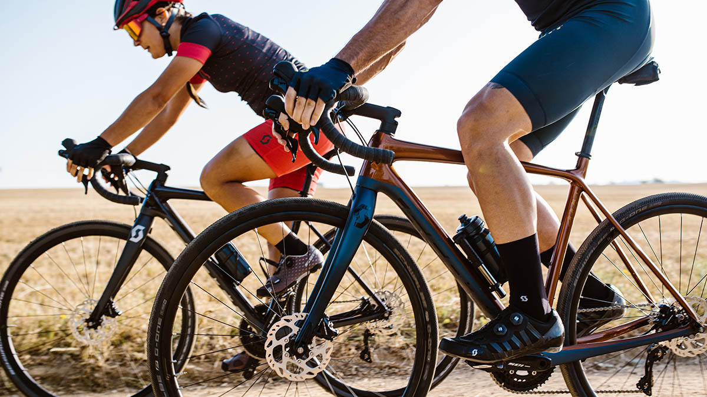
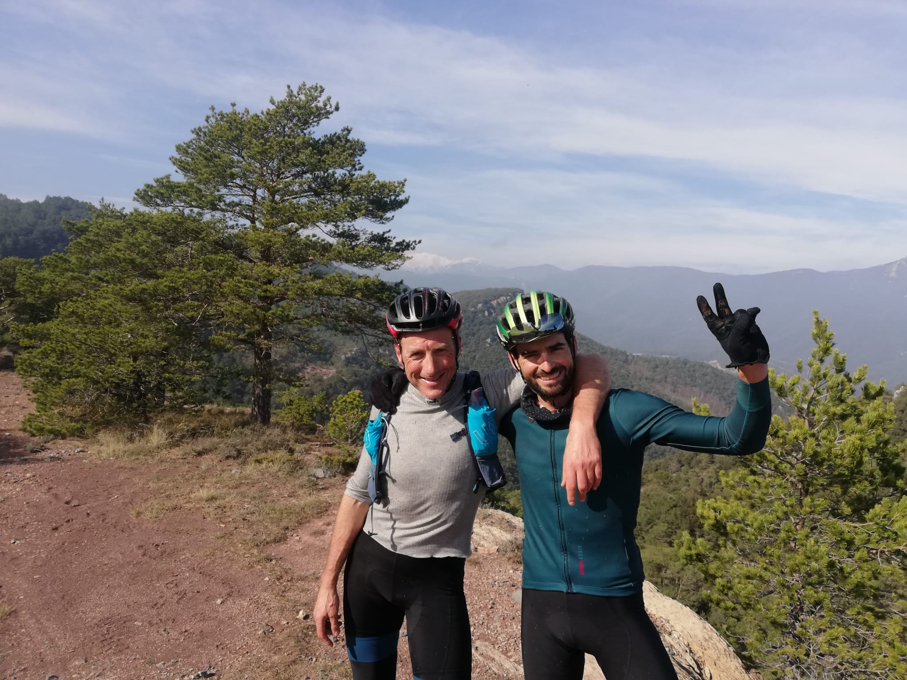

Gravel Bike Touring in Andorra
Come and explore Andorra and its surrounding areas by Gravel Bike. Guides with local knowledge and unique
experience take you off the beaten track to explore the natural playground that is Andorra. Exert yourself and
be rewarded with the beauty of the landscape here. We offer bike rental, tour guides and self-catering
apartments with great amenities in an ideal location at our base here in Andorra.
Go on single or multi-day Gravel Bike Tour Guides tailored to each group's preference. Tufts Adventure Tours
will leave you with memories for life and can cater to your ideal time here. Our guides capatilise on their
local knowledge of trails and routes with you. You have the freedom to ride whatever type of route you dream
of
with whatever equipment needed.
As a new company, we are delighted to work with you and cater to your requirements and ideal time here.
Regarding accommodation, we have self-catering apartments and also partner with local hotels, offering
everything from 5 star hotel treatment, to supply and help with equipment necessary to enjoy a camping setup
on
a multi-day bike trip.
With excellent bikes for gravel, road and mountain bike from Scott and Brodie, we have all bases covered. All
you need to bring is yourself, friends and family.
While our website is developed further, get in touch with Svein@tuftsadventuretours.com to organise your
visit.
Until then,
Svein Tuft, Tufts Adventure Tours.
Location
Andorra and neighboring France and Spain in the Pyrenees are renowned for many things. For hiking, skiing, it's
high altitude, it's beautiful mountains. Andorra's hidden gems of gravel roads have largely been kept a
secret...
The home of many a pro cyclist and athlete, it is a playground for bike riding with endless roads twisting up
and down, gravel roads across mountains and valleys and everything to test the most technically able mountain
bikers.
While our base is in Andorra, we occasionally run tours elsewhere such as our Spring 2020 camps in the Garrotxa
Mountains between Girona and Andorra.
Upcoming Tours
Come join us in the high Garrotxa North of Girona for 6 days of gravel specific training. This will be the 1st
edition of spring training camps with Tufts adventure Tours. The terrain is wild and difficult each day is
guaranteed to be epic.
The idea of these camps is to push your boundaries and step out of the comfort zone a bit
to prepare you for the upcoming season, whether that is on the road or gravel/adventure racing.
There will be 3 guides and 3 different levels to help everyone achieve their goals.
The camp will be based out of a beautiful old catalan farm house with all the amenities. We will have a Chef,
soigneurs and mechanic to make sure everyone
has a great experience and all your needs are taken care of, so you can focus on the big days of
training.
We
are going to have evening chats discussing how to prepare for your events covering topics such as lifestyle,
nutrition, training load and a number of other protocols. Sit down with Svein Tuft and pick his brain and learn
some of the tactics that allowed him to thrive in the world tour until the age of 42. Learn from renowned
adventure racer and head guide David Rovira how to tackle multi day adventure races.
There's a wealth of knowledge in these 2 veterans of endurance sport and our aim is to help you bypass a lot of
the typical hurdles
many come across in the early years of taking on big challenges such as dirty Kanza or Trans alps. It will be an
amazing 6 days learning together in one of the most beautiful places on the planet. We look forward to meeting
you.
Svein's Story
"More than 20 years ago I was exploring by bike as a young man in
Northern Canada, Yukon and Alaska. In a strange turn of events this led
me to my profession of 20 years in the pro peleton. I was riding gravel
before it was cool.
In those days it was what you had to do to get up
North. I loved it then but I love it more now. The bikes and technology
have been a big factor in that. It’s amazing what kind of terrain you
can travel in one day on a modern gravel bike.

The thing I love the most
now, is to see people out in the mountains seeing what I get to see on a
daily basis. The smiles on their faces after a very difficult,
beautiful, epic day is what motivates me these days.
I want our guests
to have an experience of a lifetime and I want them to return the next
year or next month!"
- Svein Tuft, Tufts Adventure Tours Founder.
Bikes for Rent

At Tuft's Adventure Tours our aim is to give you the ultimate adventure experience on your visit to
Andorra. We will be riding in the most beautiful parts of the high pyrenees, of Andorra, Spain and
France and the terrain is very rugged. Which is why equipment really matters.
Our fleet of bikes for rent is comprised of Scott and Brodie gravel bikes. With
Scott and Brodie bikes you will be riding the best quality gravel bikes on
the
market. This will allow you to focus on the route at hand and soak up all of the surrounding beauty
without stressing whether your bike is going to make it through the rest of your journey.
Scott Addict Gravel 20
Key Features:
- Addict Gravel Disc HMF Carbon Frame
- Shimano GRX RX810 Disc 22 Speed
- Syncros RP2.0 Disc Wheels
- Schwalbe G-ONE Allround Tires
"The SCOTT Addict Gravel 20 has been set up to allow you to ride any road, anywhere and in any weather conditions. A lightweight HMF Carbon fiber frame, Syncros components, some rugged Schwalbe G-One tires and Shimano Hydraulic disc brakes give you a rig that will let you get your adventure on, no matter what. Find yourself, get lost." - Scott Bikes.
Full Specification is available here.Brodie Romax Carbon 2020

Key Features:
- Textreme Carbon Fibre Frame
- Shimano GRX Hydraulic Brakes
- 650b and 700c wheel options
Brodie are a quality Canadian bike brand that we are happy to offer for rent.
Full Specification is available here.Meet your Guides
Ricard Calmet
Richard has always been passionate about outdoors and sport.
He started racing Motocross and Enduro in his early years finishing 3rd in the Spanish Championships before
moving on to mountaineering and climbing.
For over a decade Richard was climbing some of the most iconic
routes in the Alps and visiting some other climbing meccas around the world (South Africa, USA, Mali, Morocco,
Thailand, Jordan, Turquey, Greece, etc)
This is how he discovered his love for travelling and getting to know new places and people.
After moving onto become an avid mountainbiker and Xterra triathlete with resuls in races such as:
- Xterra World Champs
- French Winter Triathlon Champs (1st)
- MTB World Cup Germany
- MTB Spanish Champs, Master 40 (1st)
- MTB Ultramarathon Championships Master 40 (1st)
- MTB World Championships Masters (2nd)
Cycled around the world for 3 years (2014-2017), 55.000km, 42 countries that is at present time the biggest and most amazing experience I ever did in my lifetime. Professional firefighter in my home town I enjoy my life being in the wild, practicing sports, photography, travelling and living a healthy lifestyle With fleucny in French, Italian, English and German, Richard can show you the most incredible parts of Andorra.

David Rovira Roqueta
David has much life experience. A graduate of Georgraphy from Universitat Autònoma de Barcelona, Post-graduate
of Urban planning from Università degli studi di Venezia, with courses completed in Mountain rescue skills,
Avalanche, First aid and DEA course.
David has spent time working in the catalan Firefighter Service, in Mossos d’Esquadra (Catalan police Dept.) and
in the Mossos d'd’Esquadra mountain team. With Catalan, Spanish, Italian, French, Portuguese and English, David
looks forward to meeting you.
Adventure Races:
- 1st Raiverd 1999 (1st AR in Spain)
- 5th AR World Championship Discovery cannel. Switzerland.2001
- 6th Raid Gauloises Vietnam 2002
- Ecochallenge Fiji 2002. Special prize best biker and runner team.
- 2003 2d in AR European Championship, Raid Bimbache. El Hierro
- 4th Raid Gauloises Kirguistan 2003
- 1st ARWS raid Bimbache (world series) 2007. Andalucía
- Primal Quest Lake Tahoe /Primal Quest Moab
- 1st Ecomotion Brasil (AR world series) 2005
- 4th Explore Sweden (AR world series) 2005
- 5th Explore Sweden (AR world series) 2004
- 5th Explore Sweden (AR world series) 2004
- 2nd Raid Extreme Hidalgo. México. 2003
- AR Spanish Champion 2001, 2007, 2008
- Other races of notes include: Bull of Africa (South Africa), AR world champs New Zealand, 3x Ecomotion Brasil,3x EAH Mexico, Endurance Quest Finland.
Cycling:
- 1st Transpyr MTB stages race, 2012
- Cape Epic 2011, 2012 (top 30), 2013, 2015
- Titan Desert 2011, 2012, 2013, 2014, 2016. Master pódiums and top 15 overall
- Breck epic Colorado 2015. 4th master
- Mongolia Bike Challenge. 8th overall
- Trans Andes Xile. 1st master
- Bikepacking and cycling in; New Zealand, Sicily, Dolomites, Colorado trail, Idaho, Pyrenees full traverse 3 times, Yorkshire, Walles, Australia, California, Franch and italian Alps. David has also raced in road cycling, duathlon (podiums in the catalan championship), mountaneering ski (podium in the catalan championship), orienteering, running races and more.
- Ski traverses in La Meije (french Alps) Argentina, Vale d’Aosta, Aletschhorn glacier full traverse (Switzerland) Sellaronda (Dolomites), Swedish Lapland and Pyrenees.
Professional Consultation

Svein Tuft is offering a professional consultation service for Elite and Professional riders.
After a storied professional road racing career, reaching the highest spheres of accomplishment in the world of
cycling - in grand tours, the classics, Olympics and World Championships - all the while maintaining a grounded
perspective and understanding of how to drive athletic performance as a bike rider to it's peak while remaining
balanced as a person.
Feel free to reach out to Svein@tuftsadventuretours.com to discuss how we can work together.